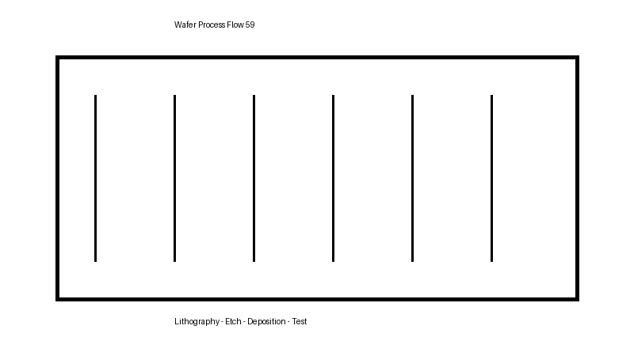

This topic describes dose control, beam calibration, and implant damage recovery. It is generated for large-scale authoring, indexing, post-processing, search, and publishing validation.
Figure: Ion Implantation visual 01415

Procedure
Verify the process recipe and approved operating window.
Load the wafer lot and validate equipment readiness.
Execute the configured process and capture metrology results.
Compare the measured values against specification limits.
Record deviations and initiate corrective action where required.